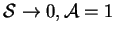
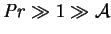
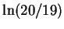
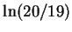
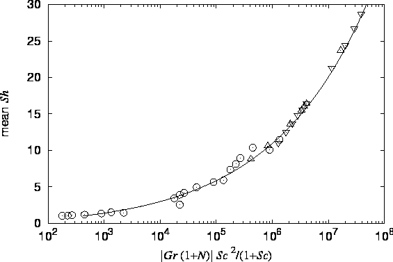
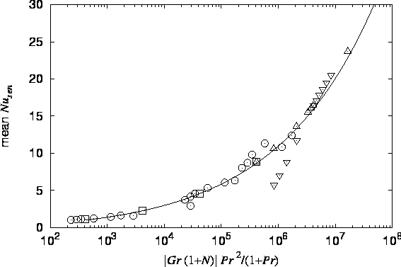
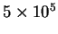
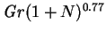
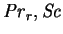
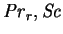

Lin, Huang and Chang (1990) reported numerical solutions for the vapour transport analog of the problem posed for a pure fluid by Patterson and Imberger (1980): the evolution of an initially isothermal uniform gas-vapour mixture in a plane vertical rectangular cavity subjected to a step change in the temperature and vapour mass fraction at the hot and/or cold walls. These step changes were not imposed symmetrically, however. Only square cavities were considered ( ). The Schmidt and Prandtl numbers were fixed at 0.6 and 0.7, respectively.
None of the solutions displayed the oscillatory approach to steady-state discussed by Patterson (1984). Patterson's analysis was predicated on the relation , so it is only marginally applicable to the the problem of Lin et al. Other differences in the problems were the lack of symmetry, noted above, and the introduction of a second species. One of the conditions for the oscillation--the broadening of the intrusion layer as it approaches the other vertical wall and consequent tilting of the isotherms beyond the horizontal--is apparent in the numerical solutions. Unfortunately, the numerical scheme of Lin et al. was only first order accurate in time, and no tests of the independence of the results on the time step were reported, so it may be that the solutions simply do not accurately reflect the evolution of the system--that they were unable to resolve complex transient behaviour like decaying internal gravity waves. I must leave this question open, however, as the response of a gas-vapour mixture to a shock as violent as a step change in boundary conditions is beyond the scope of this study.
Like Ranganathan and Viskanta (1988; reviewed in §3.3.8),
Lin et al. included transpiration, with  fixed at ,
but neglected the interdiffusion energy
flux; the comments in §3.3.8 apply.
fixed at ,
but neglected the interdiffusion energy
flux; the comments in §3.3.8 apply.
The solutions were carried to steady-state. The asymptotic mean Sherwood and (sensible) Nusselt numbers were reported and are compared with other numerical results and my formulae (McBain 1997b; §3.3.16, equations 3.3 and 3.4) in figures 3.1 and 3.2.
|  |
|  |
The agreement is reasonable over most of the range
but the data of Lin et al. show an (as yet unexplained) peak
for values of the abscissae
around  before returning to the curve at the highest values.
The correlations proposed by Lin et al. involved a combined Grashof number of
the form
, which is difficult to justify theoretically,
does not remove the peculiar maximum and increases the scatter of the data
points relative to figures 3.1 and 3.2,
particularly at  , as admitted by Lin et al.
Their correlations do not involve
 or
, as admitted by Lin et al.
Their correlations do not involve
 or  .
.
A difficulty with the quoted Sherwood and Nusselt numbers is that they are
only based on the gradients of the vapour mass fraction and temperature, which
means that they would not be the same at the hot and cold walls; cf. the
expressions derived in §2.3.4; and so do not really reflect the
vapour and energy transfer rates. Lin et al. did not specify which wall
the gradients were calculated at, so it has not been possible to correct
their figures for the finite value of  . The point here is that when
. The point here is that when
 , vapour and energy cross the boundaries of the cavity by
advection as well as diffusion and conduction.
, vapour and energy cross the boundaries of the cavity by
advection as well as diffusion and conduction.